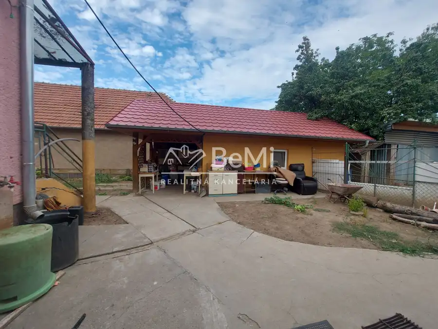
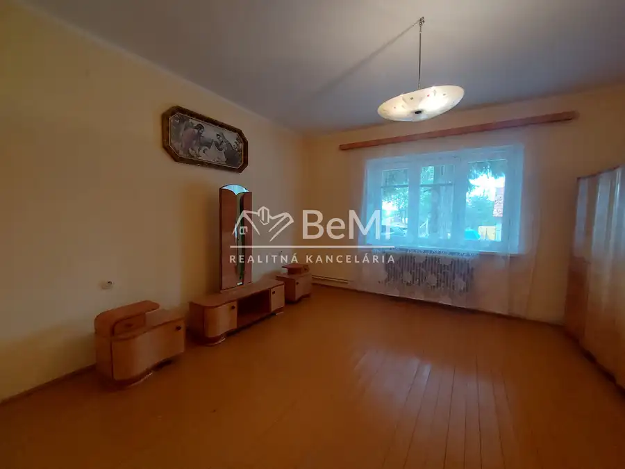
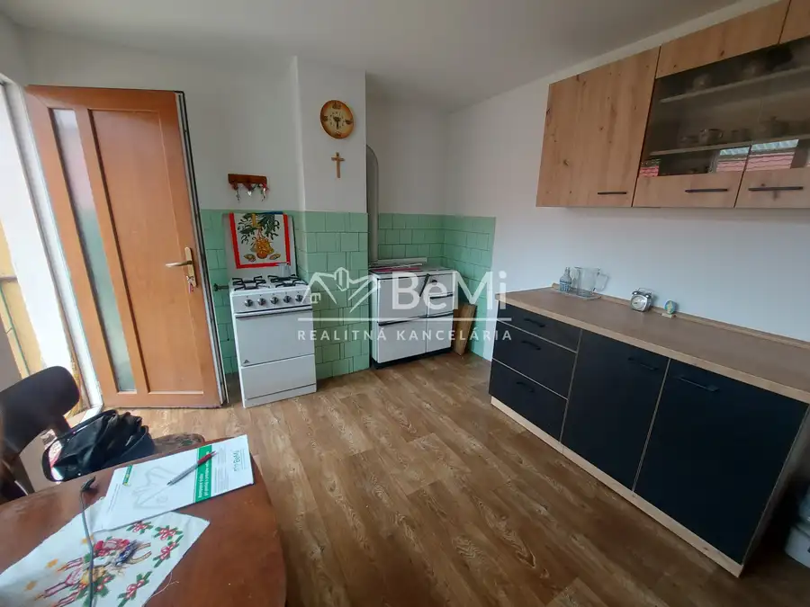
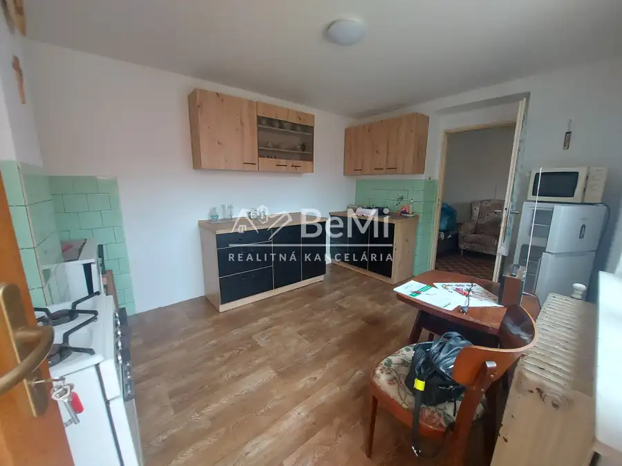
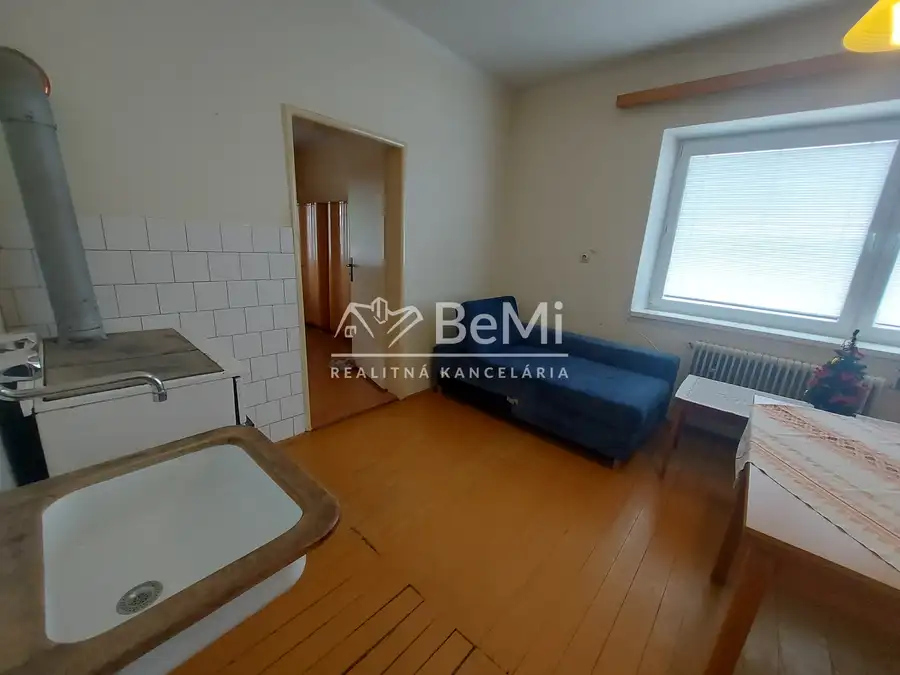
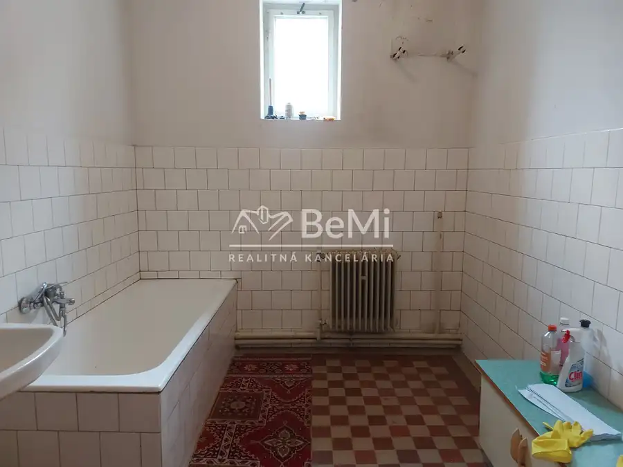

Predaj rodinný dom Černík, pozemok 2486m2, okr. Nové Zámky(254-12-JUF)
Černík







- StavČiastočná rekonštrukcia
- VlastníctvoOsobné
O nehnuteľnosti
254-12-JUF. Ponúkame Vám na predaj zachovalý tehlový suchý 3 izbový rodinný dom v obci Černík, v tichej uličke od krajského mesta Nitra cca 24 km, od Nových Zámkov 24 km, od mesta Šurany 10 km. Vymenené sú v celom dome plastové okná a v izbách plávajúca podlaha, inak pôvodný stav. Nachádza sa na krásnom priestrannom pozemku 2486m2, cca šírka 17m, dĺžka 150m. Dom je síce v pôvodnom ale zachovalom stave. Dispozícia domu : kuchyňa, prechodná chodba, ďalšia chodba, z ktorej sa vchádza do 3 izieb, (jedna izba je prechodná), do kúpeľni s vaňou, do špajze odtiaľ je vchod na pochôdznu povalu. Dom je čiastočne podpivničený, kde sa nachádza kotol a ešte jedna miestnosť, ktorá služila ako vínna pivnica. Do pivnice je samostatný vchod. Vykuruje sa s radiátormi, v dome sú aj sporáky na tuhé palivo. Všetky IS : elektrina 220/380V, plyn, dom je napojený na vodu zo studne (obecný vodovod pred pozemkom). Hneď vedľa domu sa nachádza pekná plechová šopa a ďalšie drevené šopky. Na dvore je murované suché WC, menšia murovaná pivnička na zeleninu.Na pozemku sa nachádza priestranná murovaná garáž, 220/380V, nad ňou je tiež odkladací priestor.Pozemok je veľmi pekný, rovinatý, udržiavaný, oplotený zo všetkých stán, s vysadeným viničom a rôzne ovocné stromky. Prístup je z asfaltovej cesty.Rozloha pozemku ponúka široké využitie podľa vlastných predstáv napr.: na výstavbu bazéna, detské ihrisko, na pestovanie zeleniny alebo vytvorenie okrasnej záhrady.Výhody : slnečný, výborná tichá lokalita, veľký pozemok s výbornými rozmermi, dobrý prístup a parkovanie vo dvore je možné aj pre viac áut ...Cena 138 000 €V prípade záujmu o obhliadku môžete volať 7 dní v týždni 0908 135 800 alebo napísať faberova@realitybemi.sk.NAŠE CENY SÚ VRÁTANE PROVÍZIE ZA KOMPLETNÝ PRÁVNY SERVIS A SÚ SCHVÁLENÉ MAJITEĽOM.Prostredníctvom nášho finančného poradcu Vám bezplatne pomôžeme s financovaním kúpy nehnuteľností.
Parametre
- Druh
- Rodinný dom
- Dátum zverejnenia
- 04. 09. 2026
- Plocha pozemku
- 0 m²
- Počet izieb / miestností
- 3
- Stav nehnuteľnosti
- Čiastočná rekonštrukcia
- Typ
- Predaj
- Typ konštrukcie
- Tehlová
- Vlastníctvo
- Osobné
- Vybavenie
- Garáž, Pivnica
- Vykurovanie
- Lokálne
- Zariadenie
- Čiastočne zariadené
- Zastavaná plocha
- 130 m²
- Úžitková plocha
- 0 m²